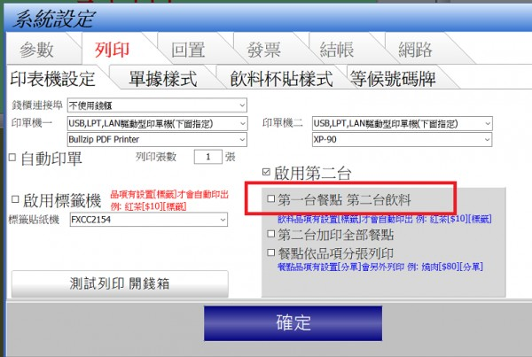
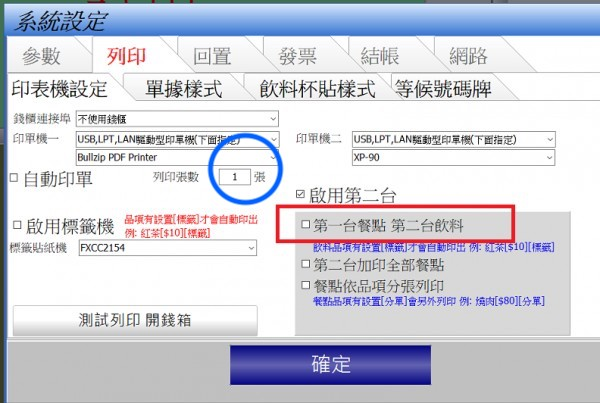

請問等候號碼牌在哪邊設定出單機1還2
該如何設定讓他出在前面出單機
5 個回答
您好
目前號碼牌如果只有第一台印單機 就會印第一台
如果有兩台 會固定印在第二台, 系統內定將 第二台做飲料吧檯使用(前台)
目前號碼牌如果只有第一台印單機 就會印第一台
如果有兩台 會固定印在第二台, 系統內定將 第二台做飲料吧檯使用(前台)

號碼牌部分:
紅色方框選項打勾 =>印在第二台
紅色方框選項不勾 =>印在第一台
張數問題:
號碼牌固定只有一張
列印張數只針對第一台的餐點 填2,第一台印單機餐點內容應該會印出兩張
張數是指藍色圈圈部分?

這邊張數設定幾張 餐點就會印幾張 (只限第一台) 第二台仍然是印一張
請問您在兩台的模式下 張數設定2張 ,第一台印幾張?第二台印幾張?
沒有收到您的來信 請確認Email地址
advposys@gmail.com
advposys@gmail.com
收到您的檔案了 確實如此 已經修正這個問題 請至首頁下載更新